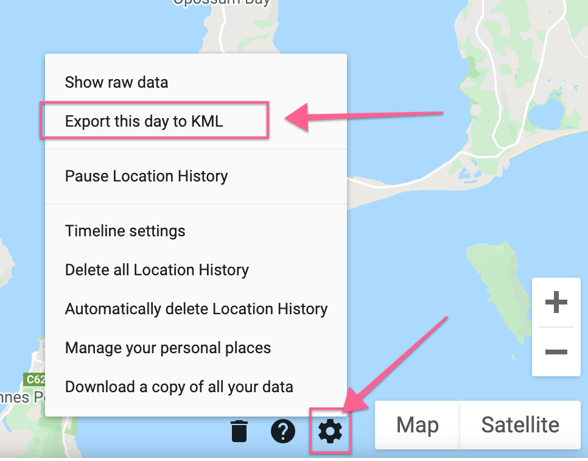
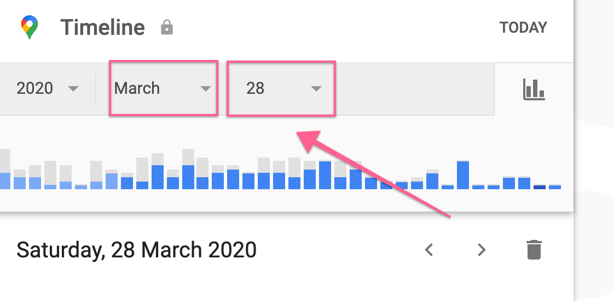

Submit your location data, we'll scrub it, anonymize it and use it to track the virus spread.
1) Tap this Google Maps Timeline link and select the settings button on the right. Hit 'Export this day to KML'. 
2) Select yesterday as the date and export the KML data for this day too (the same as step 1). 
3) Repeat the above steps for every day until you reach the date you suspected you contracted the virus.
4) Drop all your files here and they will be submitted.